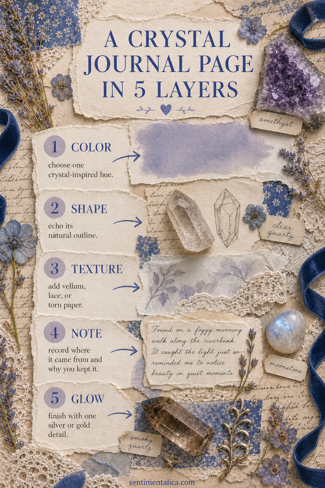
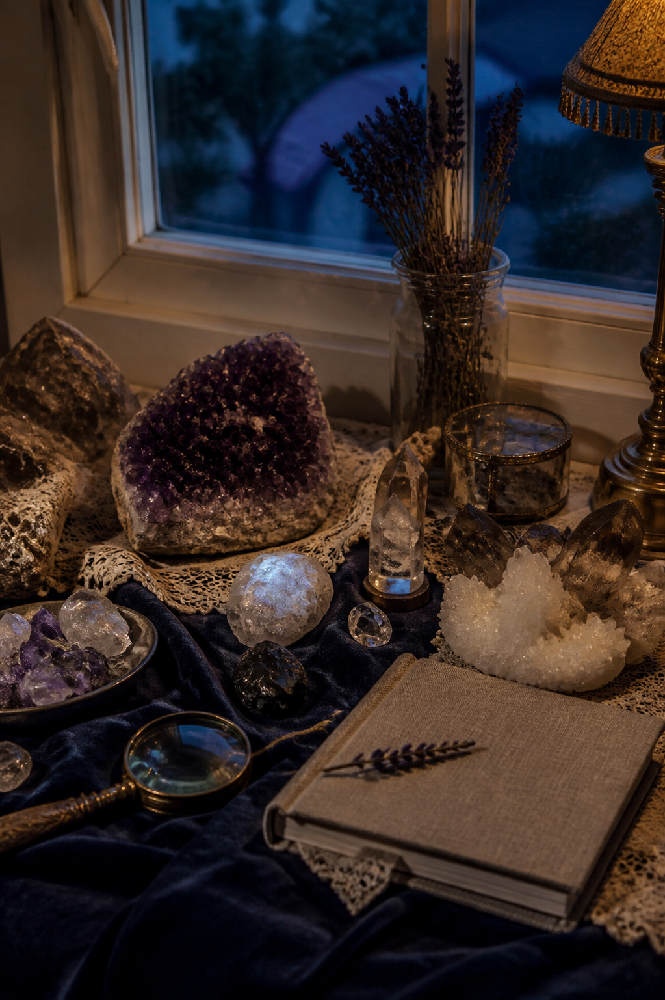

A crystal-inspired journal page does not need to explain energy, promise healing, or resemble a catalogue. It can begin with what crystals offer visually: unusual color, fractured light, imperfect geometry, and the feeling of discovering something small and precious.

Begin with one crystal, not a whole collection
Choose a stone you already own, a museum photograph, or a mineral image from a book. Look closely before gathering supplies. Is the color cloudy or clear? Are the edges sharp, rounded, striped, or clustered? The page will feel more convincing when it responds to one specimen rather than borrowing every familiar crystal motif at once.
Layer one: choose the color family
Pull one main hue and two quieter companions from the stone. Amethyst might suggest dusty violet, midnight blue, and parchment. Moonstone can lead to pearl, mist blue, and soft grey. Smoky quartz works beautifully with cocoa, charcoal, and old cream. Let the lightest shade cover most of the page so the darker color still feels luminous.
Layer two: repeat the shape
Echo the mineral's outline in subtle ways. Tear a tall pointed scrap, draw one angular frame, or cut translucent paper into a rough cluster. Avoid covering the page with perfect printed crystals. One repeated geometry creates a visual language without making the theme feel literal.

Layer three: add tactile contrast
Pair hard, reflective crystal shapes with soft materials: lace, velvet ribbon, cloudy vellum, mulberry paper, or a faded botanical scrap. Contrast is what makes the mineral idea visible. If everything is glossy, the page becomes cold; if everything is soft, the crystal loses its sparkle.
Layer four: write the object's story
Record where the stone came from, who gave it to you, what its color reminds you of, or why you kept it. If you do not own the specimen, write an observation instead: It looks like rain held inside glass. Personal meaning is more interesting than copying a list of traditional properties.
Layer five: finish with one glint
Add a single metallic detail: a silver thread, a tiny gold star, graphite rubbed along an edge, or one pearl bead. Stop before every layer begins to shine. A small glint looks magical because the rest of the page gives it darkness and quiet.
A palette to try
- Midnight blue for depth and framing
- Dusty violet for the main mineral note
- Warm ivory for breathing room
- Moonstone grey for translucent layers
- Restrained silver for the final glint
Make a specimen label
Cut a narrow tag and add the date, place, color, and one observation. You might write “violet at the center, almost grey at the edge” or “found in the little shop after rain.” A factual label beside a poetic sentence creates a pleasing tension. If the stone is borrowed from a photograph, identify the source in your private notes rather than pretending it belongs to your collection.
For a two-page spread, keep the crystal and layered materials on one side and let the facing page hold the story. Repeat only one color and one angular line across the fold. This prevents the theme from swallowing the writing.
If the page feels too decorative, remove one crystal image and add one sentence. If it feels flat, lift a vellum edge or tuck thread beneath the focal piece. The goal is not to prove that the page is magical. It is to make an ordinary observation feel worth keeping.
Browse more gentle journal ideas for color, paper, and collected stories.